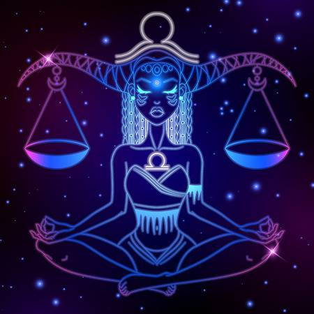

Welcome you indecisive person, that most of the time blames your self inflicted crisis on your astrology sign, think of this as your home away from home.
Lets break it down then:
Qualifications: Born between September 23rd through October 22nd
Symbol: The scale which signifies justice, balance, and harmony enabling us to be natural peacekeepers. This one is quite a stretch, but lets go along with it.

Planet: Venus is the warmest planet in the Solar system, even though it is not closest to the Sun, because of its very thick atmosphere that creates an extreme greenhouse effect. It is home for more volcanoes than any other planet, which brings it in an incredible connection to the astrological symbolism of Pluto. Due to its proximity to Earth, it is seen as the brightest of the planets in the sky, and to add to that, it is the only planet named after a female figure. This puts a strong accent on its female role, and other than our reflective satellite – the Moon, we will see how rare are the celestial bodies in our charts that can be linked to our feminine side. Venus is a lady among planets, turning in the opposite direction than most of them, and fogged by thick clouds that don’t allow its surface to recognize anything beyond it. Venus rules both Taurus and Libra, two signs that have difficulty accepting each other, one being practical and physical to the core, and the other turned to expressive beauty, reflection in other people, and everything we want to be seen. The main conflict of use and practicality with pose and outer beauty is hidden in Venus, and we should always ask ourselves if there is a side to it we lack in order to balance its inner natures. Venus is the goddess of love and romance, both sensual physical love, and platonic, unreachable ideal of it. It is a sleeping beauty as much as it is a prostitute, and she is the one to realize that morals and obligation have nothing to do with love, passion, or creation.